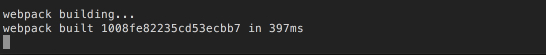

ESlint
Если вы не знакомы с "линтерами", то вы, наверняка, знакомы с типичным поиском ошибки в стиле myVariable is undefined и подобными.
Настроив линтер, вы сможете видеть в консоли много полезной инфорамции: от забытой точки-с-запятой (кстати, не актуально для ES2015), до уведомлений о неиспользуемых переменных.
Очень удобно для рефакторинга кода.
Современный ESlint пошел еще дальше.
С добавленим собственных правил, вы можете поддерживать единый стиль программирования внутри компании!
Но, довольно теории.
Поставим нужные пакеты:
npm i babel-eslint eslint eslint-plugin-react --save-dev
Теперь, хотя я и говорил, что файлы .xxxrc обычно не нужны, для ESlint все же нужно сделать такой.
В нем мы опишем правила для синтаксической проверки (lint) кода.
.eslintrc
{
"extends": "eslint:recommended",
"parser": "babel-eslint",
"env": {
"browser": true,
"node": true
},
"plugins": [
"react"
],
"rules": {
"no-debugger": 0,
"no-console": 0,
"new-cap": 0,
"strict": 0,
"no-underscore-dangle": 0,
"no-use-before-define": 0,
"eol-last": 0,
"quotes": [2, "single"],
"jsx-quotes": [1, "prefer-single"],
"react/jsx-no-undef": 1,
"react/jsx-uses-react": 1,
"react/jsx-uses-vars": 1
}
}
Самое интересное, конечно же, секция rules, где:
0 - правило выключено
1 - правило выдаст предупреждение
2 - правило выдаст ошибку
Некоторые правила принимают массив аргументов, например quotes.
В нашем случае, именно это правило можно прочитать так: Показывай ошибку, если встретишь двойную кавычку.
Чтобы ESlint работал в автоматическом режиме, мы будем все так же использовать webpack.
Наряду с секцией loaders, в webpack есть секция... preloaders (да-да, postloaders тоже есть).
Я думаю из названия секций уже все понятно: код обрабатывается "до" и "после" loaders.
Для ESlint нам подходит preloaders.
Итак, поставим нужный лоадер:
npm i eslint-loader --save-dev
Поправим конфиг:
webpack.config.js
...
module: {
//добавили ESlint в preloaders
preLoaders: [
{
test: /\.js$/,
loaders: ['eslint'],
include: [
path.resolve(__dirname, "src"),
],
}
],
//все остальное осталось не тронутым
loaders: [
{
loaders: ['react-hot', 'babel-loader'],
include: [
path.resolve(__dirname, "src"),
],
test: /\.js$/,
plugins: ['transform-runtime'],
}
]
}
...
Здесь и в будущем, я буду использовать ... - если даю фрагмент(ы) файла, а не весь код целиком.
Теперь достаточно перезапустить сборку.
Должно получиться следующее:

Линтер показывате нам, что в файле src/containers/App.js есть неиспользуемая переменная PropTypes, хотя она определена.
Это действительно так, поэтому давайте поправим код:
src/Containers/App.js
import React, { Component } from 'react'
export default class App extends Component
{
render()
{
return <div>Привет из App</div>
}
}
Сохранив файл, мы увидим в консоли следующее:
Великолепно!
Ошибок нет.
На всякий случай добавлю: сборку webpack не нужно было перезапускать.
Обычно, сборку нужно перезапускать лишь после изменений в webpack.config.js
В остальных случаях, так как у нас настроен "режим наблюдения" - webpack сам перезапустится и сгенерирует новый файл сборки.
Итого: на данный момент мы можем писать ES2015/ES7 код, использовать JSX и не переживать за глупые ошибки, а своевременно править их, используя подсказки ESlint.
Webpack автоматически пересобирает наш файл сборки (/static/bundle.js), при этом мы используем всю мощь Hot Module Replacement, и если изменим что-либо в js коде react-компонентов - изменения прилетят сразу же в браузер без перезагрузки страницы.
Поздравляю, мы готовы с комфортом написать Redux приложение.